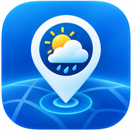

MeteoTrack
Inicio
Búsqueda
Favoritos
Historial
Contacto
El clima de tu lugar, al alcance
Buscá una localidad, mirá el pronóstico y guardá los sitios que sean de tu interés.
Buscar una localidad
Usar mi ubicación